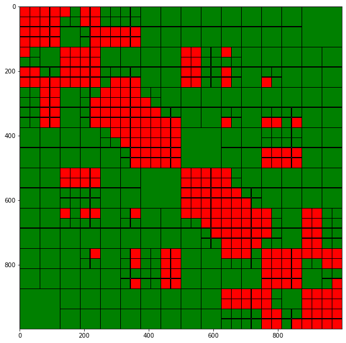

Hierarchical (\mathcal{H}-)Matrices
Contents
Hierarchical (\(\mathcal{H}\)-)Matrices#
In this section we will discuss hierarchical matrices (or \(\mathcal{H}\)-matrices). These allow the representation of and matrix vector products with the matrix of Green’s functions interactions with a complexity of \(\mathcal{O}(N\log N)\), where \(N\) is the number of evaluation points.
Another nice feature of \(\mathcal{H}\)-matrices is that it is straight forward to design algorithms for an approximate \(LU\) decomposition and approximate inverse of these matrices with also near-linear complexity.
The disadvantage of \(\mathcal{H}\)-matrices is that compared to Fast Multipole or \(\mathcal{H}^2\) matrix techniques they do not have linear complexity (the \(\log\) factor becomes important for very large problems), and they tend to have also in practice larger memory requirements than these techniques.
Nevertheless, the algorithmic implementation is very simple and parallelisation is easy. This is why they are still very popular. Moreover, in many practical applications it seems the case that also for oscillatory problems they keep good performance into the medium wavenumber regime (though their asymptotic complexity is not optimal here).
In the literature \(\mathcal{H}\)-matrix technqiues are also often called ACA methods. The historical reason is that \(\mathcal{H}\)-matrices are often implemented using adaptive cross approximation. Nevertheless, this is an inaccurate description as ACA is merely the algorithm that low-rank compresses the blocks in an \(\mathcal{H}\)-matrix. Other low-rank compression techniques can equally be applied.
From block-cluster trees to \(\mathcal{H}\)-matrices.#
\(\mathcal{H}\)-matrices are algebraic structures operating on block-cluster trees. Assume we have target and source index sets \(I\) and \(J\), associated cluster trees \(T_I\) and \(T_J\), and block-cluster tree \(T_{I\times J}\).
Formally, the set \(\mathcal{H}(T_{I\times J}, k)\) of \(\mathcal{H}\)-matrices over the block-cluster tree \(T_{I\times J}\) can be defined as
To compress a given matrix \(A\) over a block-cluster tree into a compressed \(\mathcal{H}\)-matrix we do the following.
If the node \(\tau\times \nu\) is not admissible then \(\mathcal{H}_{\tau\times\nu}(A) := A[I_\tau, J_\nu]\), that is the \(\mathcal{H}\)-matrix stores the direct dense representation of the interactions between \(I_\tau\) and \(J_\nu\).
If the node \(\tau\times \nu\) is admissible then \(\mathcal{H}_{\tau\times\nu}(A):= CZ^H\), where \(A[I_\tau, J_{\nu}]\approx CZ^H\) is a low-rank representation of rank at most \(k\).
In the below representation of a block-cluster tree every green box has a low-rank representation, and every red box has a dense representation.

This structure is algorithmically extremely simple. For low-rank compression ACA is often used as it only needs to look at a subset of the rows and columns of a matrix. The generation of an H-Matrix representation parallelises perfectly as all blocks are independent from each other. This also makes it easy to distribute blocks across parallel clusters.
Evaluating a matvec with a \(\mathcal{H}\)-matrix is straight forward. We simply iterate through all leaf blocks of the block-cluster tree, compute the local products and sum up the results. For low-rank blocks we evaluate the matvec as \(y = (CZV^H)x = C(V^Hx)\). This guarantees that the local complexity is \(\mathcal{O}(n_{min}k)\). Only for a small number of non-admissible blocks we have a locally quadratic complexity.
One can give an exact analysis of the memory requirements of \(\mathcal{H}\)-matrices. Here, we will not go into the technicalities. For typical applications we obtain a memory complexity and complexity of matrix-vector products of \(\mathcal{O}(N\log N)\). Compare to standard dense matrices, which have a memory and matvec complexity of \(\mathcal{O}(N^2)\). This allows us to efficiently treat problems with millions of unknowns.
The global storage and matvec cost scales like \(\mathcal{O}(N\log N)\) for typical scenarios. This compares extremely favourably with dense matrix formats that require \(\mathcal{O}(N^2)\) operations.
\(\mathcal{H}\)-matrix operations#
It is possible to define the usual matrix addition and multiplication operations over \(\mathcal{H}\)-matrices. The idea is based on using the recursive block-structure until on the leaf level we are dealing with operations on local low-rank or dense matrices. However, if we add two low-rank matrices of rank at most \(k\) the result will have a rank bounded by \(2k\). So we need to recompress to achieve rank \(k\) again.
With multiplication and addition operations available we can define an approximate \(\mathcal{H}\)-matrix inverse.
Recall that we can write the inverse of a matrix
as
with \(S := M_{22} - M_{21}M_{11}^{-1}M_{12}\).
The idea is to recursively apply this inversion to an \(\mathcal{H}\)-matrix$, where at the lowest level we only require inverses of non-admissible blocks and matrix products/additions with low-rank matrices.
In a similar manner it is possible to recursively define a \(\mathcal{H}\)-matrix \(LU\) decomposition.